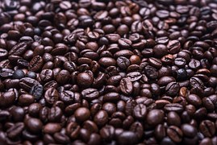

House Blend

House BlendHouse BlendHouse BlendHouse BlendHouse BlendHouse BlendHouse BlendHouse BlendHouse BlendHouse BlendHouse BlendHouse BlendHouse BlendHouse BlendHouse BlendHouse BlendHouse BlendHouse BlendHouse BlendHouse BlendHouse BlendHouse BlendHouse BlendHouse Blend.

Seasonal Beans

Seasonal BeansSeasonal BeansSeasonal BeansSeasonal BeansSeasonal BeansSeasonal BeansSeasonal BeansSeasonal BeansSeasonal BeansSeasonal BeansSeasonal BeansSeasonal BeansSeasonal BeansSeasonal Beans.